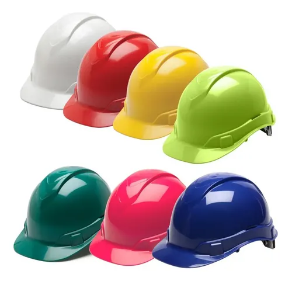
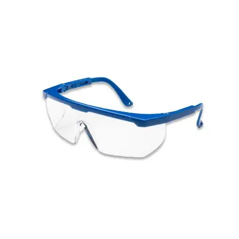
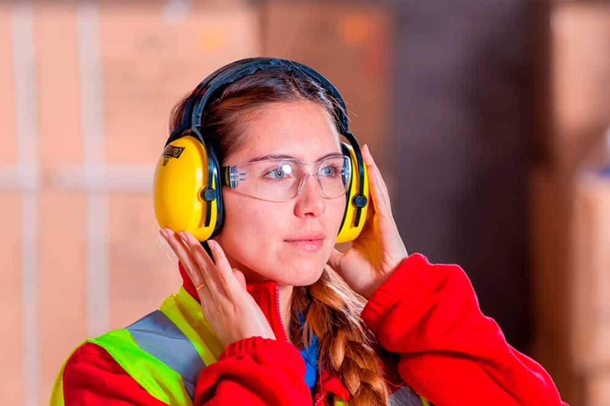
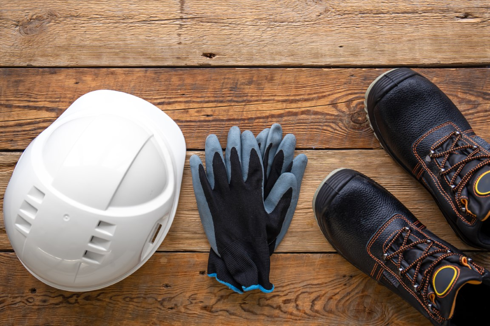
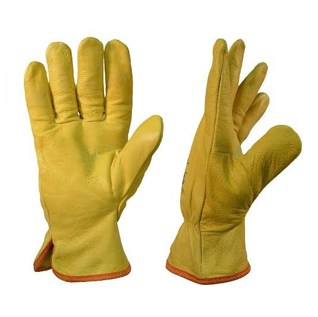
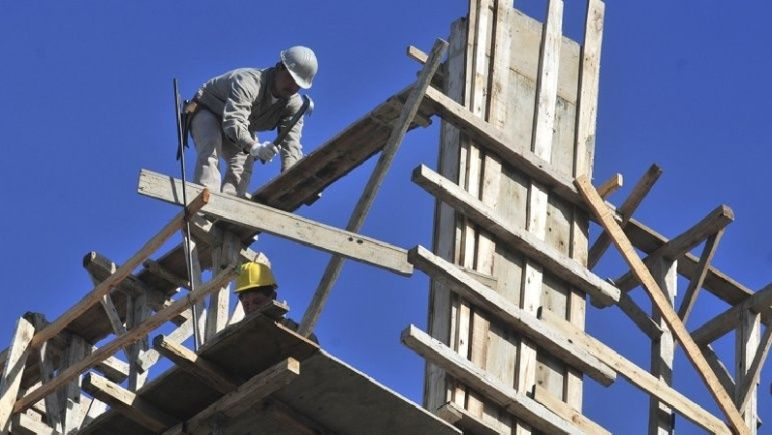

Seguridad e higiene en obra
Protocolos, EPP y prevención de riesgos en el taller de construcciones.
La higiene y seguridad en el trabajo tiene que ver con la prevención de todo tipo de daños a la salud de los trabajadores. En una obra existen numerosos recaudos que deben ser tenidos en cuenta para prevenir accidentes y lesiones.
El marco legal general en Argentina es la Ley Nacional de Seguridad e Higiene en el Trabajo N° 19.587. Específicamente para la construcción, nos rige el Decreto Reglamentario 911/96, que establece las normas específicas, responsabilidades y el uso obligatorio de elementos de protección.
01 Elementos de Protección Personal (EPP)
Los EPP son indispensables para prevenir accidentes de trabajo ante la presencia de riesgos específicos que no pueden ser aislados o eliminados. Según la normativa, deben ser provistos por el empleador y estar certificados.

Casco de seguridad
Protege contra impacto de objetos y golpes en la cabeza.

Protección ocular
Antiparras y anteojos para evitar partículas, polvo y salpicaduras.

Protección auditiva
Orejeras o tapones para ambientes con ruido superior a 85 dB.

Calzado
Calzado con puntera de acero y guantes específicos para cada tarea.

Guantes de seguridad
Protegen contra cortes, quemaduras, abrasiones y riesgos químicos.
02 Factores de riesgo principales
Caída de altura
Ocurre en andamios, escaleras, excavaciones o huecos. Prevención: Barandas perimetrales (0.50m y 1m), zócalos, plataformas de mínimo 0.60m y uso obligatorio de arnés con cabo de vida independiente.
Riesgo eléctrico
Cortocircuitos o contactos directos/indirectos. Prevención: Uso de disyuntor diferencial, puesta a tierra, cables con doble aislación, tableros normalizados y herramientas en buen estado.
Orden y limpieza
No es una tarea extra, es prevención. Beneficios: Disminuye accidentes, aumenta el espacio de trabajo, evita incendios y agiliza evacuaciones.
03 Actividad: Encontrá la infracción

Andamio sin barandas perimetrales ni zócalos.
El andamio está armado con maderas sueltas, sin diagonales de arriostre ni zócalos.
Materiales acumulados obstruyendo la vía de circulación.
Consigna: Hacé clic en los puntos rojos de la imagen para descubrir las infracciones de seguridad. ¿Qué elementos de protección faltan? ¿Qué riesgos identificás?
04 Evaluá lo que aprendiste
Pregunta 1: Según el Decreto Reglamentario 911/96, ¿qué elemento es obligatorio para trabajos en altura?
Pregunta 2: ¿Cuál es el nivel de ruido a partir del cual se recomienda usar protección auditiva?
Pregunta 3: ¿Qué elemento es el más importante para prevenir el riesgo eléctrico en obra?